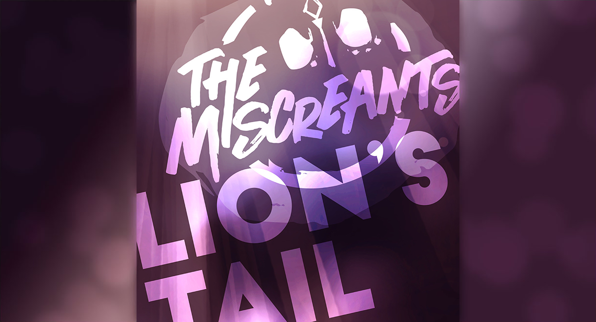

A „Lion’s Tail” a Jorvik leghangosabb zenekarának, a The Miscreantsnek az első kislemeze! Zenéjükkel arra szeretnék ösztönözni a lányokat, hogy kövessék az álmaikat, és merjenek szembeszállni a társadalom szabályaival és normáival. Olvasd el a „Lion’s Tail” dalszövegét!